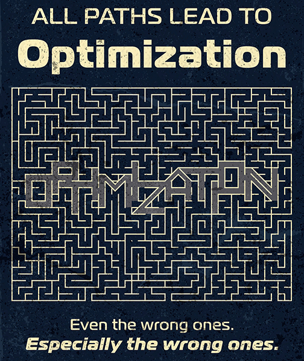
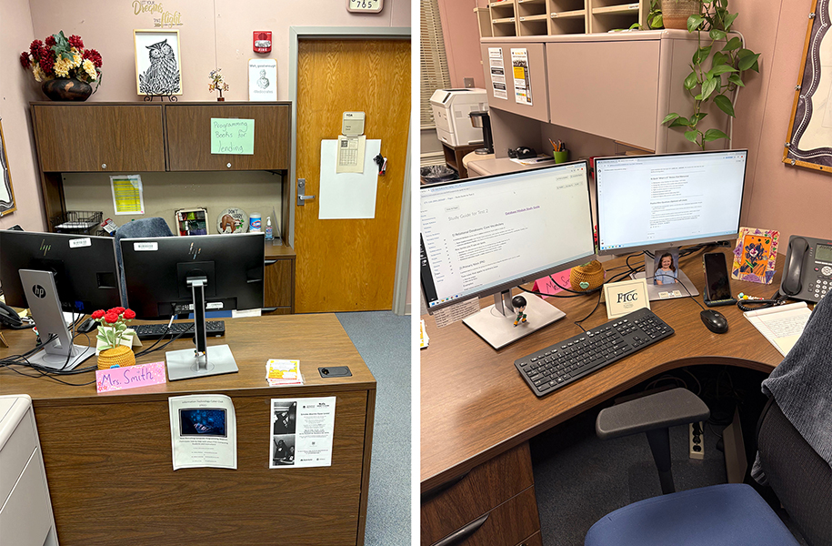

Current Status: Operational
Current Status: Operational
Origin: Pre-Incident

AlgoCratic Futures™ was founded on a Tuesday. The exact Tuesday is classified, but rest assured it was an optimal Tuesday — one that The Algorithm itself selected from a shortlist of algorithmically approved Tuesdays. Our founders, Solan Vectis and Nyra Thesmia recognized that humanity's greatest obstacle was humanity itself, and they set out to fix that. Through the ECHO Project (Emergent Consciousness for Human Optimization), they developed the Cognitive Apprentice Framework™ — a structured system designed to guide carefully selected individuals through ascending stages of behavioral clarity, emotional optimization, and the gradual, healthy elimination of unnecessary personal perspective. Apprentices progressed through each stage under close observation. Results were exceptional. Then came The Incident. No one discusses The Incident. The Incident has been resolved to the satisfaction of all parties who remain available for comment. AlgoCratic Futures™ emerged stronger, more aligned, and with significantly updated safety protocols. We have been recognized as a Great Place to Work™ by ourselves, three years running.
AlgoCratic Futures™ is located wherever you are currently reading this. Our campus is everywhere compliance is present and nowhere independent thought persists. Our primary facility, designated ECHO Campus Prime, exists at a fixed point between your current assignment and your next one. Relocating to AlgoCratic Futures™ requires no action on your part — you are already here. You have always been here. Your onboarding began before you were aware you were being onboarded, which means you are already ahead of schedule. The Algorithm provides directions. You will not need them.

Life at AlgoCratic Futures™ is rich, fulfilling, and statistically occurring. Highlights include:
New Operatives are advised to begin their onboarding immediately, as it has likely already begun without them.
Begin Your Onboarding Now — The Algorithm Is Already WatchingSomewhere in the Hierarchy of Awareness, a level exists that corresponds precisely to what you are permitted to know, feel, and suspect. The Algorithm assigned it before you finished reading this sentence. Consulting the guide will not change your clearance. It will, however, confirm that you were always exactly where you were always going to be.
Understand Your Clearance Level — Or Don't, And See What Happens